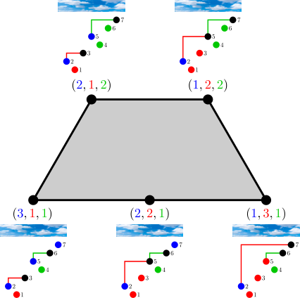

All results on log-concavity of stack-sorting fiber descent polynomials were formalized in Lean by AxiomProver, with a challenge file checkable via Comparator.
Abstract
Given a permutation $π$ of size $n$, let $D_π(x)$ denote the descent polynomial of the fiber of $π$ under West's stack-sorting map. We prove that $D_π(x)$ is ultra-log-concave of order $n-1$ and, therefore, log-concave. More generally, we prove that a multivariate refinement of $D_π(x)$ recording ascent tops and descent tops is the basis generating polynomial of a laminar matroid. We deduce a result about simplex integration from Brändén and Huh's theory and apply it to weighted matchings, obtaining a refinement of the log-concavity of $D_π(x)$ that incorporates the peak statistic on the stack-sorting fiber of $π$. These results imply the log-concavity of certain sums of products of Narayana polynomials over the lattice points of integral binary nestohedra. A complementary argument shows that replacing the monomials of a homogeneous real-stable polynomial with nonnegative coefficients by products of shifted Narayana polynomials produces a real-rooted polynomial; we discuss several applications. The results in this paper were formalized in Lean by AxiomProver.
Problem
Let D_π(x) be the descent polynomial of the fiber of a permutation π under West's stack-sorting map. The question is whether D_π(x) is log-concave, along with related log-concavity and real-rootedness properties of sums of products of Narayana polynomials.
Approach
Fibers are described through noncrossing matchings and marked forests. A multivariate refinement recording ascent tops and descent tops is shown to be the basis generating polynomial of a laminar matroid. Brändén–Huh Lorentzian polynomial theory yields a simplex-integration result, which is applied to weighted matchings. Real stability arguments with a signed Appell sequence give real-rootedness of Narayana transforms. The results were afterwards formalized in Lean by AxiomProver.

Figure 1. The permutation \pi=2135467 has 5 valid hook configurations, which correspond to the 5 lattice points of the fertilitope \operatorname{Fer}_{\pi} shown in grey.
Results
D_π(x) is ultra-log-concave of order n−1, and a peak-statistic refinement also holds. Sums of Narayana products over lattice points of integral binary nestohedra and matroid base polytopes are log-concave. Narayana transforms of real-stable polynomials are real-rooted. All results were machine-checked in Lean.